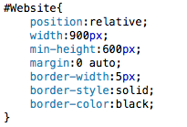
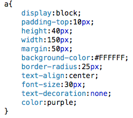

Web Site Design & Construction
Borders are a cool feature of CSS, though I don't use them as much as others do. I generally only use them to wrap the main container division in something to separate it from the colour of the backdrop. I occasionally use the border-radius attribute to make my corners round. That's usually all I use from the border attribute library. The border comes in three sections: border-width, border-style and border-color. I would hope that these are fairly self-explanatory, but for the morons among us - border-width dictates how wide the border is going to be; border-style controls the style of the border, this can be solid, dashed, or any number of things (see here); and border-color sets the colour of the border.
For our tutorial I'm just going to set a nice, relatively thin, border around our container division, so that it stands out that little bit more. This is how I've done it:
My container div, now with added border! 
That's all we have to learn in terms of our CSS. Now, as I've mentioned, I hate the default anchor tags, so I'm going to take the attributes which we've learnt here and reskin my anchor tags to make them pretty. See if you can do the same and meet back here in 20 mins. Then we'll move on to JavaScript
*twenty minutes pass*
Oh, hello again. How did you do? This is what I did:
Finally, no more hideous underlines! 
I'll show you what my final site looks like on the next page. It's safe to say I'm happy with it. Though it's not the best colour scheme or layout, it serves well as an introduction to the many techniques you will need as a web developer. The last thing which I have to show you in this section is how to externalise your CSS. This is relatively simple. Create a new text file and name it something along the lines of "style.css". Now, go to your header section where all of your style is being kept and copy everything contained within the style tags, but not the tags themselves, and paste them into the new text file. Then delete all of your style from your main page, you don't need it anymore. This time, do include the style tags in your delete. After this, type the following line into your header:
Your CSS is now externalised.
Next »Go to your browser, refresh the page, you should notice that nothing changes. Your CSS is now external to your web page, meaning that you can now use it across multiple pages. Go ahead and make a second page (which we've already linked to) if you want. Try it out. Should look the same. I'll wait for you in the JavaScript section.